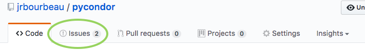
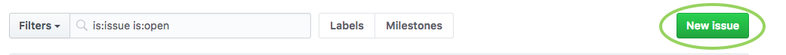
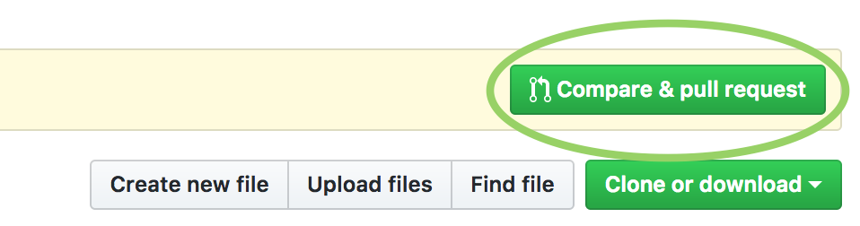

Contributing¶
PyCondor is an open source project and contributions are always welcome!
If you are new to working with forks, check out GitHub's working with forks article.
Step 1: Creating a new issue¶
- If you don't already have a GitHub account, create one
- Go to the PyCondor GitHub page and create a new issue by clicking on the "Issues" tab and then the "New issue" button


Step 2: Forking the repository¶
(If you have an existing configured fork of PyCondor, you can skip to Step 4: Syncing an existing fork)
- From the PyCondor repository use the "Fork" button to fork the project into your GitHub account

- This forked copy of PyCondor can now be cloned to your local machine using
$ git clone https://github.com/<your_username>/pycondor.git
Step 3: Configuring a remote for a fork¶
From your cloned copy of PyCondor from the previous step, list the existing remotes with
$ git remote -v
You'll most likely see something like
origin https://github.com/<your_username>/pycondor.git (fetch) origin https://github.com/<your_username>/pycondor.git (push)
To add the original PyCondor project repository as a remote (named "upstream") to your copy of PyCondor via
$ git remote add upstream https://github.com/jrbourbeau/pycondor.git`
Now when you execute git remote -v, the newly added upstream remote should be present
origin https://github.com/<your_username>/pycondor.git (fetch) origin https://github.com/<your_username>/pycondor.git (push) upstream https://github.com/jrbourbeau/pycondor.git (fetch) upstream https://github.com/jrbourbeau/pycondor.git (push)
Step 4: Syncing an existing fork¶
To ensure that your existing fork is up-to-date with the original PyCondor repository, fetch the upstream commits via
$ git fetch upstream
The output should look something like
remote: Counting objects: xx, done. remote: Compressing objects: 100% (xx/xx), done. remote: Total xx (delta xx), reused xx (delta x) Unpacking objects: 100% (xx/xx), done. From https://github.com/jrbourbeau/pycondor * [new branch] master -> upstream/master
Now the commits to the master branch of jrbourbeau/pycondor are stored in your local upstream/master branch. At this point, you'll want to make sure (if you're not already) that you're on the master branch of your local repository
$ git checkout master
Switched to branch 'master'
Now you can merge the upstream/master branch into your master branch with
$ git merge upstream/master
Now the master branch of your local copy of PyCondor should be up-to-date with the original PyCondor master branch!
Step 5: Create a new feature branch¶
Next, create a new branch for the feature you would like to develop with
$ git checkout -b <new_feature_branch_name>
The output should be
Switched to branch '<new_feature_branch_name>'
Step 5: Develop new code!¶
Now add your feature, bug fix, typo fix, etc.
Step 6: Running tests with the new code¶
Once your contribution has been added, you'll want to run the tests for this project to ensure that none of the code you added broke any tests. If you haven't already, make sure you have the necessary software installed for running the tests (pytest) via
pip install -r requirements-dev.txt
Now the tests can be run by going to the root directory of your pycondor repository and executing
make tests
Step 7: Documentation¶
If necessary for your contribution, add the appropriate documentation to the files in the docs/docs directory
Step 8: Committing and uploading changes¶
Now the changes you've made are ready to be committed and uploaded to GitHub. Let git know which files you would like to include in your commit via
$ git add <modifies_files_here>
and then commit your changes with
$ git commit -m '<meaningful messages about the changes made>'
Now you can push this commit from your local repository to your copy on GitHub
$ git push origin <new_feature_branch_name>
Step 10: Submitting a pull request¶
Finally, you can go to your copy of PyCondor on GitHub and submit a pull request by clicking the "Compare & pull request" button!
